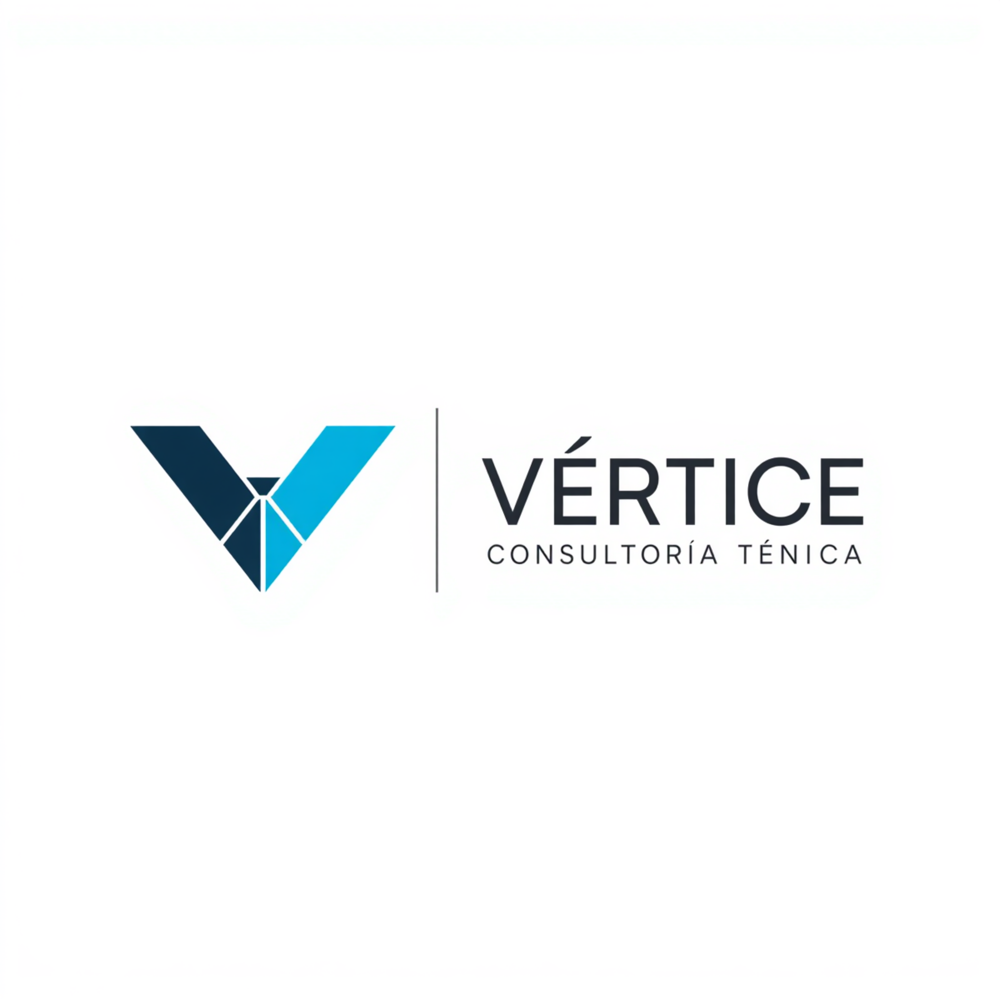
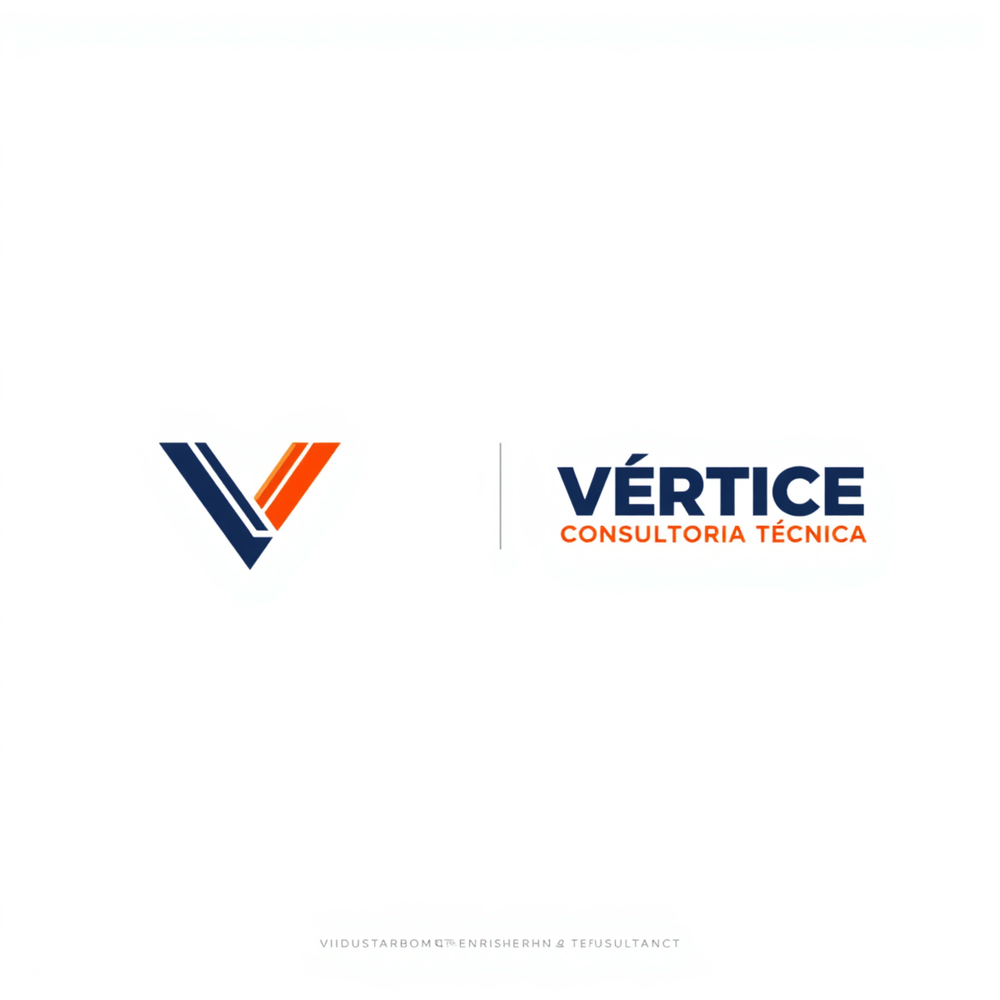
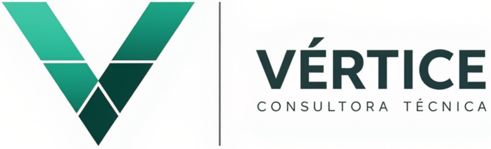

Construcción facetada en polígonos vectoriales con tipografía sans-serif ligera de precisión suiza.

Líneas de carga paralelas con bisel técnico y paleta industrial de alta visibilidad (Navy & Safety Orange).

Polígonos articulados en gama de verdes técnicos que representan solidez sistémica y aptitud operativa.

Criterios de aplicación técnica para definir la identidad institucional de Vértice.
| Criterio | Opción 1: Prisma Metrológico | Opción 2: Vector de Izaje | Opción 3: Mosaico Estructural |
|---|---|---|---|
| Territorio Visual | Auditoría OAA, metrología de carga e ISO 17020. | Izaje pesado, plumas mecánicas y normas ASME B30. | Higiene y Seguridad (HSE) y apto operativo. |
| Paleta de Color | Azul Petróleo & Cyan Eléctrico. | Azul Marino & Safety Orange. | Verde Esmeralda & Verde Bosque. |
| Público Objetivo Clave | Directores de Planta y Comités de Auditoría. | Jefes de Mantenimiento y Rigging de Campo. | Gerentes de HSE y Aseguradoras de Riesgo. |
| Rendimiento en Certificados | Cabecera pericial técnica y formal. | Alto contraste en credenciales de operadores. | Excelente integración como sello de aptitud. |